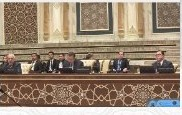

«Jadidshunoslik saboqlari» doimiy ilmiy seminari
Yosh tadqiqotchilar, doktorantlar va magistrlar uchun jadidchilik manbashunosligi va arxiv bilan ishlash metodikasi bo'yicha mahorat darslari.

«Jadidlar va matbaa san'ati: Toshbosmadan raqamli nashrgacha»
Turkistonda dastlabki xususiy matbaalarning tashkil etilishi, Behbudiy, Avloniy va Qodiriy nashriyotlarining dizayni va matbaa madaniyati.
Seminar
Jadid matbuoti tilini o'rganish bo'yicha amaliy seminar
Eski o'zbek yozuvi (arab grafikasidagi matnlar)ni transliteratsiya qilish va ilmiy muomalaga kiritish mahorat darsi.
Qatnashish
Davra suhbatiJadidlar avlodlari bilan uchrashuv va xotira kechasi
Qodiriy, Cho'lpon va Fitrat avlodlari ishtirokida oilaviy arxivlar, saqlanib qolgan noyob qo'lyozmalar namoyishi.
Batafsil Seminar
Seminar
Jadid dramaturgiyasi: 'Padarkush'dan 'Kecha va kunduz'gacha
Milliy teatrning shakllanishi, sahna asarlarining mafkuraviy va badiiy xususiyatlari tahlili.
Ro'yxatdan o'tish Ilmiy munozara
Ilmiy munozara
Turkiston Muxtoriyati parlamentarizmi: Zamonaviy qarashlar
Huquqshunos olimlar va tarixchilar ishtirokida Muxtoriyat konstitutsiyaviy qonunchiligi tahlili.
Batafsil